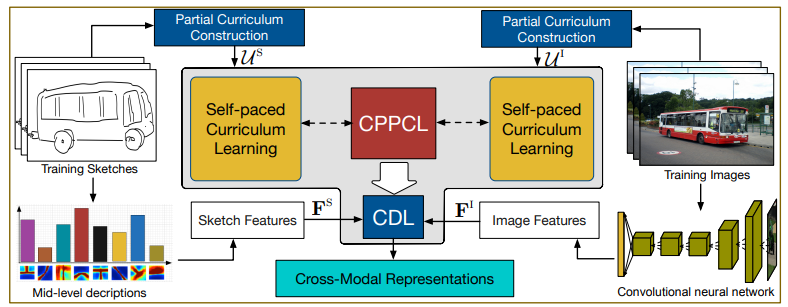

We're sorry but songjingkuan doesn't work properly without JavaScript enabled. Please enable it to continue.
Back
|
Compact Representation
|
Cross-media Analysis
|
Representation Safety
Compact Representation
24. Unified Multivariate Gaussian Mixture for Efficient Neural Image Compression
Xiaosu Zhu, Jingkuan Song, Lianli Gao, Feng Zheng, Heng Tao Shen
CVPR 2022
PDF
CODE
23. Meta Distribution Alignment for Generalizable Person Re-Identification
Hao Ni, Jingkuan Song, Xiaopeng Luo, Feng Zheng, Wen Li, Heng Tao Shen
CVPR 2022
PDF
CODE
22. Continual Referring Expression Comprehension via Dual Modular Memorization
Heng Tao Shen, Cheng Chen, Peng Wang, Lianli Gao, Meng Wang, Jingkuan Song
IEEE Trans. Image Process. 2022
PDF
CODE
21. Learning Efficient Hash Codes for Fast Graph-Based Data Similarity Retrieval
Jinbao Wang, Shuo Xu, Feng Zheng, Ke Lu, Jingkuan Song, Ling Shao
IEEE Trans. Image Process. 2021
PDF
20. Camera-Agnostic Person Re-Identification via Adversarial Disentangling Learning
Hao Ni, Jingkuan Song, Xiaosu Zhu, Feng Zheng, Lianli Gao
ACM Multimedia 2021
PDF
CODE
19. 3D Self-Attention for Unsupervised Video Quantization
Jingkuan Song, Ruimin Lang, Xiaosu Zhu, Xing Xu, Lianli Gao, Heng Tao Shen
SIGIR 2020
PDF
CODE
18. Binary neural networks: A survey
Haotong Qin, Ruihao Gong, Xianglong Liu, Xiao Bai, Jingkuan Song, Nicu Sebe
Pattern Recognit. 2020
PDF
17. SNEQ: Semi-Supervised Attributed Network Embedding with Attention-Based Quantisation
Tao He, Lianli Gao, Jingkuan Song, Xin Wang, Kejie Huang, Yuanfang Li
AAAI 2020
PDF
16. Salience-Guided Cascaded Suppression Network for Person Re-Identification
Xuesong Chen, Canmiao Fu, Yong Zhao, Feng Zheng, Jingkuan Song, Rongrong Ji, Yi Yang
CVPR 2020
PDF
15. Forward and Backward Information Retention for Accurate Binary Neural Networks
Haotong Qin, Ruihao Gong, Xianglong Liu, Mingzhu Shen, Ziran Wei, Fengwei Yu, Jingkuan Song
CVPR 2020
PDF
14. One Network for Multi-Domains: Domain Adaptive Hashing with Intersectant Generative Adversarial Networks
Tao He, Yuan-Fang Li, Lianli Gao, Dongxiang Zhang, Jingkuan Song
IJCAI 2019
PDF
13. Deep Recurrent Quantization for Generating Sequential Binary Codes
Jingkuan Song, Xiaosu Zhu, Lianli Gao, Xin-Shun Xu, Wu Liu, Heng Tao Shen
IJCAI 2019
PDF
CODE
12. Beyond Product Quantization: Deep Progressive Quantization for Image Retrieval
Lianli Gao, Xiaosu Zhu, Jingkuan Song, Zhou Zhao, Heng Tao Shen
IJCAI 2019
PDF
CODE
11. 3D Self-Attention for Unsupervised Video Quantization
Zhu Zhang, Zhou Zhao, Zhijie Lin, Jingkuan Song, Deng Cai
IJCAI 2019
PDF
10. Deep region hashing for generic instance search from images
Jingkuan Song, Tao He, Lianli Gao, Xing Xu, Heng Tao Shen
AAAI 2018
PDF
9. Binary Generative Adversarial Networks for Image Retrieval
Jingkuan Song, Tao He, Lianli Gao, Xing Xu, Alan Hanjalic, Heng Tao Shen
AAAI 2018
PDF
8. Self-Supervised Video Hashing With Hierarchical Binary Auto-Encoder
Jingkuan Song, Hanwang Zhang, Xiangpeng Li, Lianli Gao, Meng Wang, Richang Hong
IEEE Trans. Image Process. 2018
PDF
7. Quantization-based hashing: a general framework for scalable image and video retrieval
Jingkuan Song, Lianli Gao, Li Liu, Xiaofeng Zhu, Nicu Sebe
Pattern Recognit. 2018
PDF
6. A Survey on Learning to Hash
Jingdong Wang, Ting Zhang, Jingkuan Song, Nicu Sebe, and Heng Tao Shen
IEEE Trans. Pattern Anal. Mach. Intell. 2018
PDF

5. Cross-Paced Representation Learning With Partial Curricula for Sketch-Based Image Retrieval
Dan Xu, Xavier Alameda-Pineda, Jingkuan Song, Elisa Ricci, Nicu Sebe:
IEEE Trans. Image Process. 2018
PDF
4. NAIS: Neural Attentive Item Similarity Model for Recommendation
Jingkuan Song, Ruimin Lang, Xiaosu Zhu, Xing Xu, Lianli Gao, Heng Tao Shen
IEEE Trans. Knowl. Data Eng. 2018
PDF
3. Complementary Binary Quantization for Joint Multiple Indexing
Qiang Fu, Xu Han, Xianglong Liu, Jingkuan Song, Cheng Deng
IJCAI 2018
PDF
2. Towards Accurate Georeferenced Video Search With Camera Field of View Modeling
Jie Shao, Gang Hu, Jingkuan Song, Xueliang Liu, Heng Tao Shen
IEEE Trans. Circuits Syst. Video Technol. 2018
PDF
1. Deep Self-Taught Hashing for Image Retrieval
Yu Liu, Jingkuan Song, Ke Zhou, Lingyu Yan, Li Liu, Fuhao Zou, Ling Shao
IEEE Trans. Cybern. 2015
PDF
x1.00
>
<
>>
<<
O
x1.00